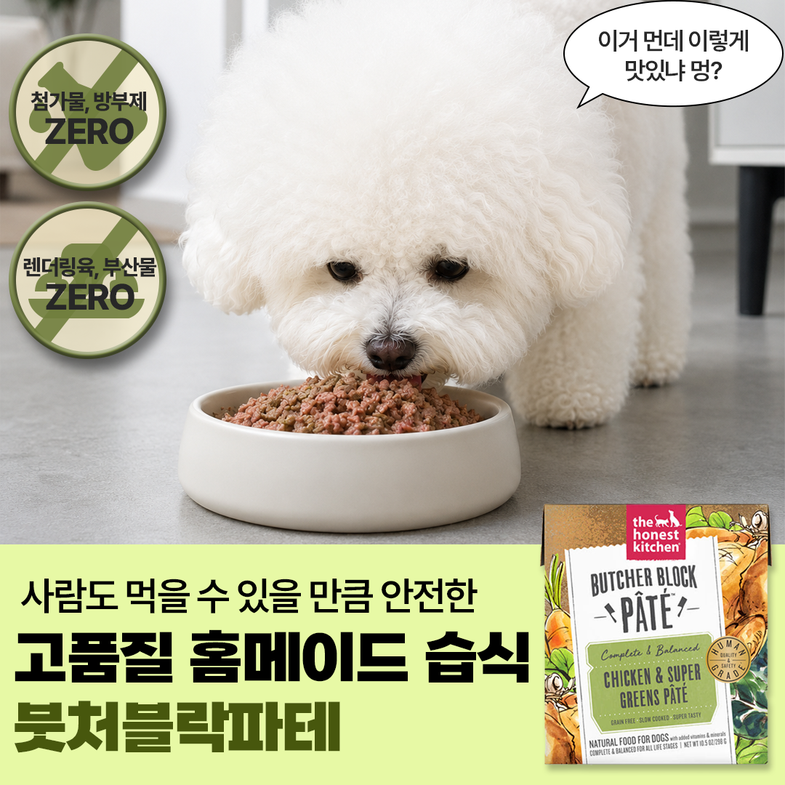
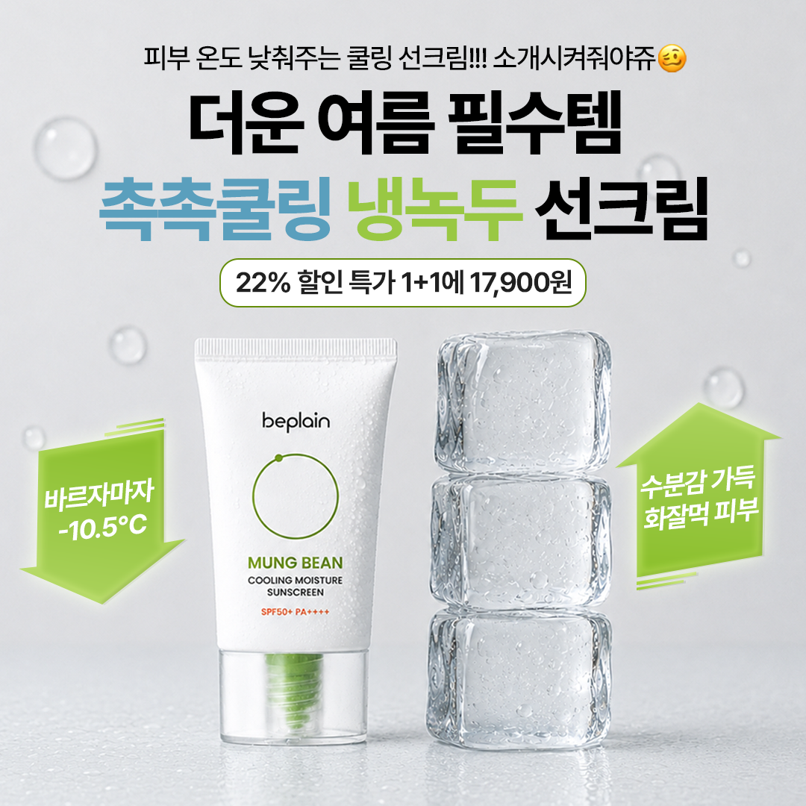
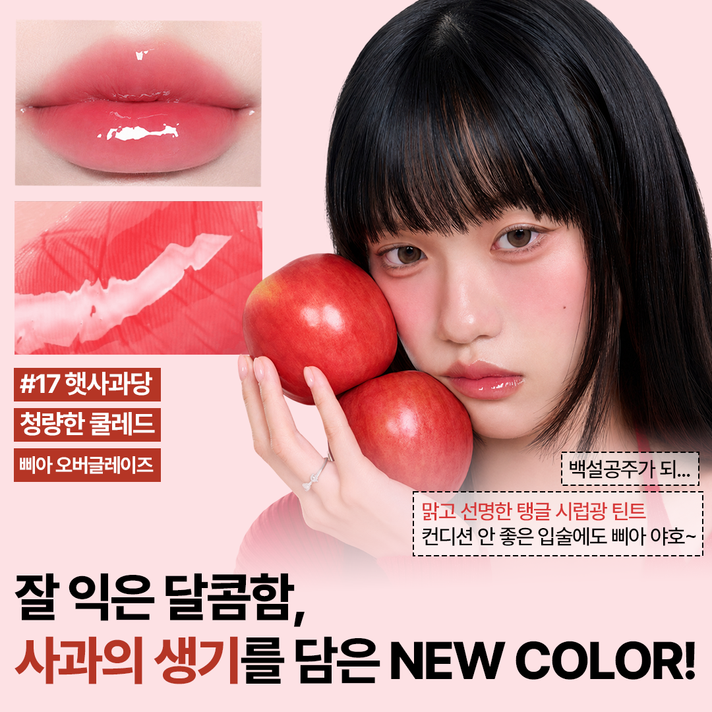

요즘 유행하는 의인화된 AI 캐릭터를 활용해 시청자에게 직접 말을 거는 쇼츠형 유산균 광고를 제작했습니다. 유산균 캐릭터가 위산 속에서 위기를 겪는 극적인 상황을 연출해 시청자의 궁금증을 유발하고, 자연스럽게 ‘장까지 살아서 가는 유산균’이라는 제품의 셀링 포인트로 연결되도록 하였습니다. 강한 표정, 다급한 음성, 직관적인 자막을 활용해 건강기능식품 광고가 지루하게 느껴지지 않도록 만들고, 짧은 시간 안에 몰입과 정보 전달이 동시에 이루어지도록 제작하였습니다.
일소 피지 클리너 제품을 주제로, 쇼츠 후킹형 광고 영상을 제작했습니다. 썸네일에는 블랙헤드가 있는 실사 이미지와 쨍한 색상의 굵은 폰트를 활용해 시선을 끌고, 제품이 해결하는 피부 고민이 바로 전달되도록 하였습니다. 또한 AI로 가상 모델을 제작해 뷰티 광고에 어울리는 인물 이미지를 구현하였습니다. 영상에서는 실제 리뷰와 사용 장면을 보여주며 제품에 대한 신뢰감을 높였고, 극적인 비포·애프터 이미지를 통해 구매 욕구를 유도하였습니다.
- IMAGE



소비자가 이미지를 보는 즉시 광고 제품과 핵심 장점을 파악할 수 있도록 메인카피, 제품 컷 등을 직관적으로 배치하였습니다. 실사 인물과 반려견 이미지를 활용하여 구매 욕구를 높이고자 했습니다. 또한 SNS에서 익숙한 밈을 카피로 녹여내서 광고가 지루하게 느껴지지 않도록 구성하고, 빠르게 스크롤되는 온라인 환경에서도 시선을 끌 수 있게끔 제작하였습니다.